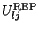
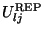
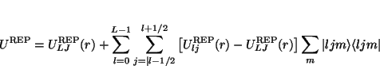
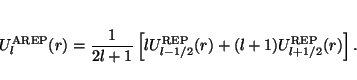
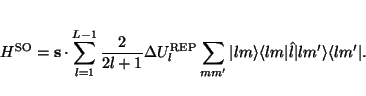
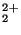
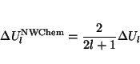

A brief recapitulation of the development of RECPs is given here, following
Pacios and Christiansen8.1. The process can be viewed as starting
from an atomic Dirac-Hartree-Fock calculation, done in jj coupling,
and producing relativistic effective potentials (REPs) for each  and
value,
. From these, a local potential is
extracted, which for example contains the Coulomb potential of the core
electrons balanced by the part of the nuclear attraction which cancels the
core electron charge. The residue is expressed in a semi-local form,
and
value,
. From these, a local potential is
extracted, which for example contains the Coulomb potential of the core
electrons balanced by the part of the nuclear attraction which cancels the
core electron charge. The residue is expressed in a semi-local form,
|  | (8.1) |
|  | (8.2) |
The spin-orbit potential is obtained from the difference between the REPs
for the two values for a given l, and may be
represented in terms of an effective spin-orbit operator,
|  | (8.3) |
 |
(8.4) |
The effective potentials, both scalar and spin-orbit, are fitted to
Gaussians with the form
The optional directive ECP allows the user to describe an effective core
potential (ECP) in terms of contracted Gaussian functions as given above.
Potentials using these functions must be specified explicitly by user input
in the ECP directive. This directive has essentially the same form
and properties as the standard BASIS directive, except for essential
differences required for ECPs. Because of this, the ECP is treated
internally as a basis set. The form of the input for the
ECP directive is as follows:
ECP [<string name default "ecp basis">] \
[print || noprint default print]
<string tag> library [<string tag_in_lib>] \
<string standard_set> [file <filename>] \
[except <string tag list>]
<string tag> [nelec] <integer number_of_electrons_replaced>
...
<string tag> <string shell_type>
<real r-exponent> <real Gaussian-exponent> <real list_of_coefficients>
...
END
ECPs are automatically segmented, even if general contractions are input.
The projection operators defined in an ECP are spherical by default, so
there is no need to include the CARTESIAN or SPHERICAL keyword
as there is for a standard basis set. ECPs are associated with centers in
geometries through tags or names of centers. These tags must match in the
same manner as for basis sets the tags in a GEOMETRY and
ECP directives, and are limited to sixteen (16) characters.
Each center with the same tag will have the same ECP. By default, the
input module prints each ECP that it encounters. The NOPRINT
option can be used to disable printing. There can be only one active
ECP, even though several may exist in the input deck. The ECP modules
load ``ecp basis'' inputs along with any ``ao basis'' inputs present.
ECPs may be used in both energy and gradient calculations.
ECPs are named in the same fashion as geometries or regular basis
sets, with the default name being "ecp basis". It should be
clear from the above discussion on geometries and database entries how
indirection is supported. All directives that are in common with the
standard Gaussian basis set input have the same function and syntax.
As for regular basis sets, ECPs may be obtained from the standard library. The names of the sets of ECPs available in the standard library (their coverage is described in Appendix A) are
"Hay-Wadt MB (n+1) ECP"
"Hay-Wadt VDZ (n+1) ECP"
"LANL2DZ ECP"
"SBKJC VDZ ECP"
"Stuttgart RLC ECP"
"Stuttgart RSC ECP"
"CRENBL ECP"
"CRENBS ECP"
The keyword nelec allows the user to specify the number of core
electrons replaced by the ECP. Additional input lines define the
specific coefficients and exponents. The variable <shell_type>
is used to specify the components of the ECP. The keyword ul
entered for <shell_type> denotes the local part of the ECP.
This is equivalent to the highest angular momentum functions specified
in the literature for most ECPs. The standard entries (s, p, d,
etc.) for shell_type specify the angular momentum projector
onto the local function. The shell type label of s indicates
the ul-s projector input, p indicates the ul-p,
etc.
For example, the Christiansen, Ross and Ermler ARECPs are available in
the standard basis set libary named {crenbl_ecp}. To perform a
calculation on uranyl (UO) with all-electron oxygen
(aug-cc-pvdz basis), and uranium with an ARECP and using the
corresponding basis the following input can be used
geometry
U 0 0 0
O 0 0 1.65
O 0 0 -1.65
end
basis
U library crenbl_ecp
O library aug-cc-pvdz
end
ecp
U library crenbl_ecp
end
The following is an example of explicit input of an ECP for H CO.
It defines an ECP for the carbon and oxygen atoms in the molecule.
CO.
It defines an ECP for the carbon and oxygen atoms in the molecule.
ecp
C nelec 2 # ecp replaces 2 electrons on C
C ul # d
1 80.0000000 -1.60000000
1 30.0000000 -0.40000000
2 0.5498205 -0.03990210
C s # s - d
0 0.7374760 0.63810832
0 135.2354832 11.00916230
2 8.5605569 20.13797020
C p # p - d
2 10.6863587 -3.24684280
2 23.4979897 0.78505765
O nelec 2 # ecp replaces 2 electrons on O
O ul # d
1 80.0000000 -1.60000000
1 30.0000000 -0.40000000
2 1.0953760 -0.06623814
O s # s - d
0 0.9212952 0.39552179
0 28.6481971 2.51654843
2 9.3033500 17.04478500
O p # p - s
2 52.3427019 27.97790770
2 30.7220233 -16.49630500
end
The Spin-orbit ECPs can be used with the Density Functional Approach, but one has to run the calculations without symmetry. Note: when a Hartree-Fock method is specified the spin-orbit input will be ignored.
Spin-orbit ECPs are fitted in precisely the same functional form as the
scalar RECPs and have the same properties, with the exception that there is
no local potential ul, no  potential and no effective charge has to be
defined. Spin-orbit potentials are
specified in the same way as ECPs except that the directive
potential and no effective charge has to be
defined. Spin-orbit potentials are
specified in the same way as ECPs except that the directive SO is
used instead of ECP. Note that there currently are no spin-orbit
ECPs defined in the standard NWChem library. The SO
directive is as follows:
SO [<string name default "so basis">] \
[print || noprint default print]
<string tag> library [<string tag_in_lib>] \
<string standard_set> [file <filename>]
[except <string tag list>]
...
<string tag> <string shell_type>
<real r-exponent> <real Gaussian-exponent> <real list_of_coefficients>
...
END
Note: in the literature the coefficients of the spin-orbit potentials are NOT
always defined in the same manner. The NWChem code assumes that the spin-orbit
potential defined in the input is of the form:
|  | (8.5) |